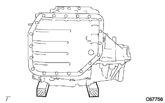
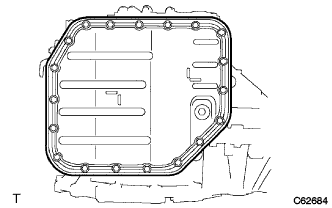
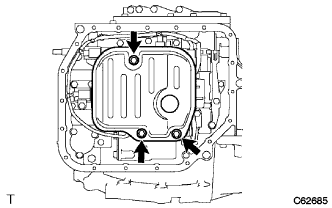
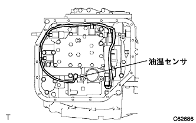
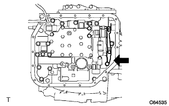
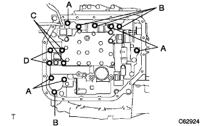

Transmission valve body Assy (U340E) Remove |
| 1. Remove the automatic trance axle ASSY |
reference)| 2. Automatic Transx Axle ASSY Fixed |
|  |
Use a piece of wood to fix the automatic transxxle.
| 3. Automatic transformer axle oil bread SUB-ASSY (ATM) |
|  |
Remove 19 bolts and remove two oil pan and two magnets.
| 4. Trans axle oil bread gasket (ATM) removed |
Remove the oil panties from the oil pan.
| 5. Valve body oil strainer ASSY removes |
|  |
Remove the three bolts and remove the oil strainer.
Remove the O -ring from the oil strainer.
| 6. Transmission valve body ASSY is removed |
Cut each connector.
|  |
Remove the bolt and lock plate and remove the oil temperature sensor.
|  |
Remove the two bolts and remove the manual dent spring and cover.
|  |
Remove 13 bolts and remove the valve body ASSY.